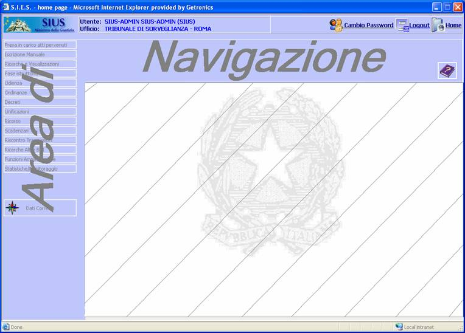
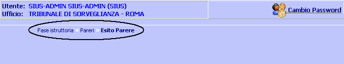
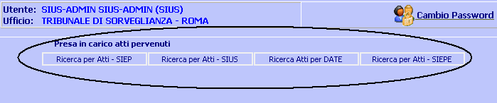
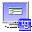
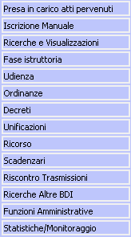
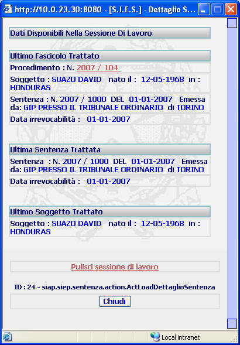

Area di Navigazione:l'area di navigazione si identifica con quella porzione di area dell'applicazione in cui sono visualizzati pulsanti e bottoni che permettono all'utente di eseguire operazioni e\o funzioni; la caratteristica di questi elementi è che saranno sempre presenti a video e utilizzabili dall'utente indipendentemente dal
LE MASCHERE VIDEO
L'area di navigazione è la seguente è la seguente :

| Inoltre durante l'esecuzione di determinate funzioni, nella porzione di area sopra l'Area Operativa, verrà visualizzato il percorso applicativo che l'utente ha effettuato per arrivare alla funzione corrente: |

Oltre a dare l'informazione del percorso, cliccando su una delle voci presenti sul percorso, l'applicazione manderà in esecuzione la funzione indicata nella voce selezionata.
| Altro elemento che può comparire nell'Area di Navigazione, nella porzione di area sopra l'Area Operativa, durante l'esecuzione di determinate funzioni, è il Menu Orizzontale: |

Esso viene visualizzato quando la funzione prescelta, contiene delle sottofunzioni relative alla funzione stessa, selezionabili attraverso uno dei bottoni presenti nel Menu Orizzontale.
PULSANTI
In quest'area sono presenti i seguenti Pulsanti:
|
PULSANTE |
DESCRIZIONE |
|
|
Con
questo
pulsante
l'utente ha la possibilità di
modificare la propria Password |
|
 |
Con questo pulsante l'utente ha la possibilità di uscire dall'applicazione tornando alla pagina di Login |
|
|
Con questo pulsante l'utente
ha la possibilità di ripulire l'area operativa pur mantenendo i dati
correnti |
|
|
Con questo pulsante l'utente ha la possibilità di visualizzare la pagina di help contestuale alla funzione che sta eseguendo |
BOTTONI
In quest'area sono presenti:

|
COMANDI |
DESCRIZIONE |
|
|
A fronte di tale comando, con il quale l'utente ha la possibilità di visualizzare in ogni istante, gli ultimi dati che sono stati trattati dal Sistema permettendogli di orientarsi in modo semplice e veloce |
COME FARE PER ...
Utilizzare l'Help:
Sono presenti tre "help on line" differenti, ciascuno utilizzabile nella sezione applicativa relativa ed in particolare:
|
Help relativo al modulo applicativo per la gestione dell'Esecuzione Penale; | |
|
Help relativo al modulo applicativo per la gestione del Tribunale ed Ufficio di Sorveglianza; | |
|
Help relativo al modulo applicativo per la gestione dell'Amministrazione. |
Di seguito sono elencate una serie di indicazioni utili per facilitare l'utilizzo dell'help all'interno delle varie applicazioni:
|
Per visualizzare la pagina contestuale dell'help sulle varie maschere dell' applicazione:
| |||
|
Per visualizzare l'indice delle pagine di Help relativamente ad un determinato argomento
| |||
|
Per tornare alla pagina precedente dell'help:
|
Utilizzare la Maschera dei Dati Correnti
A fronte della pressione del bottone il sistema apre la seguente finestra:

L'utente sarà così in grado di visualizzare gli ultimi dati che sono stati trattati dal Sistema relativamente a:
|
SOGGETTO | |
|
SENTENZA | |
|
N° SIEP/SIUS |
Inoltre:
|
Cliccando sulle voci sottolineate ad esempio: 2007 / 104 verrà visualizzata la scheda relativa alla medesima voce; | |
|
Cliccando sulla voce Pulisci sessione di lavoro l'utente può riazzerare la scheda dati correnti riferita agli ultimi dati che sono stati trattati dal sistema; | |
|
Cliccando sul Bottone si chiuderà la scheda relativa ai dati correnti; |